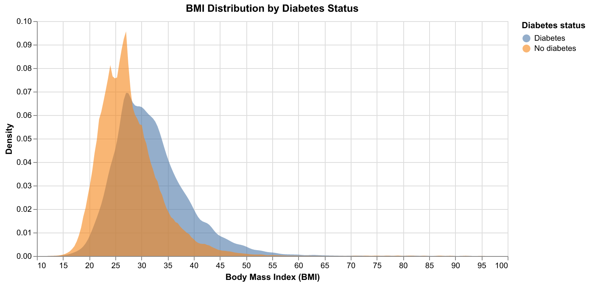

In this project, we investigated whether body mass index (BMI) can be used to predict diabetes status. Using the CDC Diabetes Health Indicators data set, which contains 253,680 survey responses from U.S. adults collected through the 2015 Behavioral Risk Factor Surveillance System, we trained a logistic regression model with BMI as the only predictor and compared it with a dummy classifier that always predicts “no diabetes”. Because only a small proportion of respondents have diabetes, we used a class-balanced model and evaluated performance with the F1 score rather than accuracy alone. Exploratory analysis showed that individuals with diabetes tend to have higher BMI values, and our model correctly identified more than half of the diabetes cases in the test set, performing better than the baseline at detecting diabetes. However, the model also produced a large number of false positives and missed many true cases, indicating that BMI alone is not sufficient for reliable diabetes classification. These results suggest that BMI is only slightly useful but limited predictor, and that adding other known risk factors and validating the model on Canadian data would be needed before such a model could support Canadian public health efforts.
Introduction
State what diabetes is medically (source reference).
How many Canadians live with diabetes? (source reference)
How many Canadians die from diabetes-related complications? (source reference)
What are the costs associated with diabetes from a public health perspective? (source reference)
Why is understanding diabetes important from a public health perspective? (source reference)
Describe our predictive/inferential question, and explain whether answering it would support the literature stated above.
Explain why our model is important for understanding diabetes.
Methods
Data
The data set used in this project is the CDC Diabetes Health Indicators data set, which contains health care statistics and lifestyle survey responses from U.S. adults along with their diabetes status. The data were originally collected by the Centers for Disease Control and Prevention through the Behavioral Risk Factor Surveillance System (BRFSS), an annual health-related telephone survey (CDC 2015). The version we use is a cleaned subset of the 2015 BRFSS survey prepared by Alex Teboul (Teboul 2021). It was sourced from the UCI Machine Learning Repository (Dua and Graff 2017) and can be found here: https://archive.ics.uci.edu/dataset/891/cdc+diabetes+health+indicators.
Each row in the data set represents one survey respondent, giving 253,680 rows and 21 features with no missing values. The target variable, Diabetes_binary, indicates whether the respondent has no diabetes (0) or prediabetes or diabetes (1). The features include chronic health conditions (e.g., high blood pressure, high cholesterol, heart disease), lifestyle factors (e.g., BMI, smoking, physical activity, fruit and vegetable consumption), health care access, self-rated physical and mental health, and demographic information (sex, age group, education and income).
(Note: Claude AI helped generate this description of how the data were curated and made publicly available)
We download the data with the code below. The data are retrieved from the “CDC Diabetes Health Indicators” entry in the UCI Machine Learning Repository (ID 891) using the ucimlrepo Python package, which returns the features and the target variable as separate data frames. We combine them into a single data set and save it as cdc_diabetes_health_indicators.csv in data/raw/, so the analysis can be re-run from the saved file without downloading the data again.
# path to the saved raw dataraw_path = Path("../data/raw/cdc_diabetes_health_indicators.csv")# only download the data if it has not been saved yetifnot raw_path.exists(): cdc_diabetes_health_indicators = fetch_ucirepo(id=891)# combine the features and target into one data frame df = pd.concat( [cdc_diabetes_health_indicators.data.features, cdc_diabetes_health_indicators.data.targets], axis=1 )# save raw dataset into data/raw raw_path.parent.mkdir(parents=True, exist_ok=True) df.to_csv(raw_path, index=False)# read the data from the saved filedf = pd.read_csv(raw_path)
# select the target and prediction featuredf = df[["BMI", "Diabetes_binary"]]# split data in train and test, stratify is to ensure there are enough examples in both splits# because most examples are non diabetic# the split is done before exploring the data so the test set is not used in the BMI plottrain_df, test_df = train_test_split( df, test_size=0.2, random_state=522, stratify=df["Diabetes_binary"])# Create processed data directoryprocessed_dir = Path("../data/processed")processed_dir.mkdir(parents=True, exist_ok=True)# save the files and check the df shapestrain_df.to_csv(processed_dir /"train.csv", index=False)test_df.to_csv(processed_dir /"test.csv", index=False)print("Training shape:", train_df.shape)print("Testing shape:", test_df.shape)
Training shape: (202944, 2)
Testing shape: (50736, 2)
Applicability of U.S. Data to the Canadian Context
Although the data set describes U.S. adults, we chose it because it is large, publicly available, and contains individual-level information on many well-established diabetes risk factors, which makes it well suited to building a classification model. These findings are also relevant to Canadian public health. Canada and the United States share similar risk factors for type 2 diabetes: many of the variables in our data set, including age, BMI, physical activity, fruit and vegetable consumption and high blood pressure, are the same factors used in the Canadian Diabetes Risk Questionnaire (CANRISK) developed by the Public Health Agency of Canada (Robinson, Agarwal, and Nerenberg 2011). Diabetes is also a major public health concern in Canada, where 9.4% of people were living with diagnosed diabetes in 2020–2021 (Public Health Agency of Canada 2023). The two countries differ mainly in how common these risk factors are rather than in which factors matter, with Americans more likely than Canadians to report diabetes and high blood pressure (Lasser, Himmelstein, and Woolhandler 2006). As a result, the relationships our model learns are likely to apply in a Canadian setting, although the model would need to be validated on Canadian data, such as the Canadian Community Health Survey, before being used in practice.
(Note: Claude AI helped generate this rationale for applying this data set in a Canadian context)
Body mass index (BMI) as a predictor of diabetes
High body mass index (BMI) is strongly associated with diabetes (Rafiq and Jeppesen 2018). Based on this, we first compared the distribution of BMI between individuals who have been diagnosed with diabetes and those who have not (Figure 1).
# use only the training data so the test set stays unseen# .copy() so adding a new column does not change train_dfplot_df = train_df[["BMI", "Diabetes_binary"]].copy()# The following plot was made using GPT6 for assistance.plot_df["Diabetes status"] = plot_df["Diabetes_binary"].map({0: "No diabetes",1: "Diabetes"})# Compare BMI distributionsbmi_plot = alt.Chart(plot_df, width=600, height=300).transform_density("BMI", groupby=["Diabetes status"]).mark_area(opacity=0.6).encode( x=alt.X("value:Q", title="Body Mass Index (BMI)"), y=alt.Y("density:Q", stack=False, title="Density"), color=alt.Color("Diabetes status:N")).properties( title="BMI Distribution by Diabetes Status")# save the plot as a png (uses vl-convert) so it renders the same in any output formatfigures_dir = Path("../results/figures")figures_dir.mkdir(parents=True, exist_ok=True)bmi_plot.save(figures_dir /"bmi_distribution.png", scale_factor=2)
from IPython.display import ImageImage(filename=figures_dir /"bmi_distribution.png", width=650)

Figure 1: BMI distribution by diabetes status from train data.
Figure 1. shows that the BMI distribution for individuals with diabetes is shifted toward higher values compared with those without diabetes. This supports our choice of BMI as a predictor of diabetes status.
# BMI summary by diabetes status using training databmi_summary = train_df.groupby("Diabetes_binary")["BMI"].agg( ["count", "mean", "median", "std"])bmi_summary
count
mean
median
std
Diabetes_binary
0
174667
27.805355
27.0
6.293866
1
28277
31.891078
31.0
7.265664
Applying BMI to predict diabetes status
To predict diabetes status, we used BMI as the only predictor and Diabetes_binary as the target. We first split the data into a training set (80%) and a test set (20%). Because most respondents do not have diabetes, we used a stratified split so that both sets have the same proportion of diabetic and non-diabetic respondents. The training and test sets were saved to data/processed/, and the test set was set aside until the final evaluation so it would not influence model building.
We then built a logistic regression model in a pipeline that first standardizes BMI with StandardScaler. To address the class imbalance, we used grid search with 3-fold cross-validation to compare a standard logistic regression with a class-balanced version, which gives more weight to the smaller diabetic class during training. We used the F1 score as the evaluation metric because it balances precision and recall. Accuracy would be misleading here, since a model that predicts “no diabetes” for everyone would still score highly.
# select BMI as the prediction feature and diabetes as the targetX_train = train_df[["BMI"]]y_train = train_df["Diabetes_binary"]X_test = test_df[["BMI"]]y_test = test_df["Diabetes_binary"]# create the logistic regression modellogistic_model = make_pipeline( StandardScaler(), LogisticRegression(max_iter=1000))
# compare regular and balanced logistic regressionparam_grid_logistic = {"logisticregression__class_weight": [None, "balanced"]}# use F1 score to balance precision and recalllogistic_search = GridSearchCV( estimator=logistic_model, param_grid=param_grid_logistic, cv=3, scoring="f1", n_jobs=-1)# train the modellogistic_search.fit(X_train, y_train)# check the best parameters and F1 scoreprint("Best parameters:", logistic_search.best_params_)print("Best CV F1:", logistic_search.best_score_)
Best parameters: {'logisticregression__class_weight': 'balanced'}
Best CV F1: 0.3331567788698364
Analysis and Results
Explain how the model predicted the diabetes label based on the features.
Report accuracy, recall, precision, and any other relevant metrics.
Determine whether the analysis supports our predictive/inferential question.
Baseline comparison with a dummy classifier
To judge whether our logistic regression model is actually learning from BMI, we compared it with a dummy classifier that ignores BMI entirely and always predicts the most common class, “no diabetes”. Because most respondents in our data set do not have diabetes, this baseline achieves a high accuracy without identifying a single diabetes case, giving it a recall and F1 score of zero. Comparing the two models shows how much predictive value BMI adds beyond simply guessing the majority class, and it highlights why accuracy alone is a misleading measure of performance for imbalanced data such as ours.
# baseline model: always predicts the most common class (no diabetes)# used to check that our model does better than simply guessingdummy_model = DummyClassifier(strategy="most_frequent")dummy_model.fit(X_train, y_train)
DummyClassifier(strategy='most_frequent')
In a Jupyter environment, please rerun this cell to show the HTML representation or trust the notebook. On GitHub, the HTML representation is unable to render, please try loading this page with nbviewer.org.
# predict diabetes using the test datalogistic_pred = logistic_search.predict(X_test)dummy_pred = dummy_model.predict(X_test)
# calculate accuracy, precision, recall and F1 score for both modelsdef get_scores(y_true, y_pred):return {"Accuracy": accuracy_score(y_true, y_pred),"Precision": precision_score(y_true, y_pred, zero_division=0),"Recall": recall_score(y_true, y_pred, zero_division=0),"F1 Score": f1_score(y_true, y_pred, zero_division=0) }# save results on the test setscore_results = pd.DataFrame( [get_scores(y_test, dummy_pred), get_scores(y_test, logistic_pred)], index=["Dummy classifier (baseline)", "Logistic regression"])
# compare the predicted and actual diabetes statusconfusion_matrix = pd.crosstab( y_test, logistic_pred, rownames=["Actual diabetes status"], colnames=["Predicted diabetes status"])
# accuracy, precision, recall and F1 score in a dfscore_results
Accuracy
Precision
Recall
F1 Score
Dummy classifier (baseline)
0.860671
0.000000
0.000000
0.000000
Logistic regression
0.676226
0.235201
0.587919
0.335988
# confusion matrix in a dfconfusion_matrix
Predicted diabetes status
0
1
Actual diabetes status
0
30153
13514
1
2913
4156
# values reported in the text below, so the numbers update automatically# Markdown() keeps the formatting (e.g. trailing zeros) when shown inlinefrom IPython.display import Markdownlogistic_scores = score_results.loc["Logistic regression"]accuracy_text = Markdown(f"{logistic_scores['Accuracy']:.2%}")f1_text = Markdown(f"{logistic_scores['F1 Score']:.4f}")recall_text = Markdown(f"{logistic_scores['Recall']:.2%}")true_positives =int(confusion_matrix.loc[1, 1])false_negatives =int(confusion_matrix.loc[1, 0])false_positives =int(confusion_matrix.loc[0, 1])
The logistic regression model has an accuracy of 67.62% and an F1 score of 0.3360. on the test data. The model correctly idetified 4156 diabetes positive cases but also failed to identify 2913 cases resulting in a recall of 58.79%.
The model also produced 13514 false positives, suggesting that BMI alone is not sufficient for reliable diabetes classification. Although the model identifies more than half of the diabetes true positives, its low precision and high false negative make it unsuitable as is for medical screening.
Discussion
The Canadain Gold Standard for diagnosing
The limitation of our model because our model is underperforming compared to Gold Standard
Our model should not be used to diagnose diabetes
Our model does not account for other features associated with diabetes
Our model uses body mass index (BMI) as its only feature to predict diabetes status. As a result, it leaves out many other factors associated with diabetes, including hypertension, dyslipidemia, smoking, sleep, family history, and ethnicity (Ismail, Materwala, and Al Kaabi 2021). Without these factors, our model greatly oversimplifies the range of factors associated with diabetes.
Potentially improving our predictive model
Adding other features associated with diabetes (Ismail, Materwala, and Al Kaabi 2021), such as, but not limited to, high blood pressure, high cholesterol, and smoking status, could improve our model’s ability to predict diabetes.
We explored only two model types, k-nearest neighbours (kNN) and logistic regression, to predict diabetes status from a single feature, BMI. Trying other models, and tuning their hyperparameters, could make our predictions more accurate and robust.
Finally, our data set describes U.S. adults, so our results may not fully reflect the Canadian population. Repeating this analysis with Canadian data would let us check whether the same relationships hold in Canada and would make our findings more statistically relevant from a Canadian public health perspective.
References
Centers for Disease Control and Prevention. 2015. “Behavioral Risk Factor Surveillance System Survey Data, 2015.” U.S. Department of Health and Human Services, Centers for Disease Control and Prevention. https://www.cdc.gov/brfss/annual_data/annual_2015.html.
“CDC Diabetes Health Indicators.” 2017. UCI Machine Learning Repository. https://doi.org/10.24432/C53919.
Ismail, Leila, Huned Materwala, and Juma Al Kaabi. 2021. “Association of Risk Factors with Type 2 Diabetes: A Systematic Review.” Computational and Structural Biotechnology Journal 19: 1759–1785. https://doi.org/10.1016/j.csbj.2021.03.003.
Lasser, Karen E., David U. Himmelstein, and Steffie Woolhandler. 2006. “Access to Care, Health Status, and Health Disparities in the United States and Canada: Results of a Cross-National Population-Based Survey.” American Journal of Public Health 96 (7): 1300–1307. https://doi.org/10.2105/AJPH.2004.059402.
Public Health Agency of Canada. 2023. “Snapshot of Diabetes in Canada, 2023.” Government of Canada. https://www.canada.ca/en/public-health/services/publications/diseases-conditions/snapshot-diabetes-canada-2023.html.
Teboul, Alex. 2021. “Diabetes Health Indicators Dataset.” Kaggle. https://www.kaggle.com/datasets/alexteboul/diabetes-health-indicators-dataset.
UC Irvine Machine Learning Repository. 2023. “ucimlrepo: Package to Import Datasets from the UC Irvine Machine Learning Repository.” Python package version 0.0.7. https://github.com/uci-ml-repo/ucimlrepo.
Rafiq, Shamaila, and Per Bendix Jeppesen. 2018. “Body Mass Index, Vitamin D, and Type 2 Diabetes: A Systematic Review and Meta-Analysis.” Nutrients 10 (9): 1182. https://doi.org/10.3390/nu10091182.
Robinson, Chris A., Gina Agarwal, and Kara Nerenberg. 2011. “Validating the CANRISK Prognostic Model for Assessing Diabetes Risk in Canada’s Multi-Ethnic Population.” Chronic Diseases and Injuries in Canada 32 (1): 19–31.
Extra Notes that can be deleted
American data, why it may relate to Canadian public health (reference source)? What are the limitations of the difference in populations (reference source)?
Interpret our results. Does the literature support the association between our selected features and diabetes?
What is the “gold standard” for diagnosing diabetes (HbA1c levels, source reference), and how does it relate to our analysis?
Limitations of our model: Why our model should not be used for diagnostic purposes (source reference), and why false negatives could be dangerous (source reference).